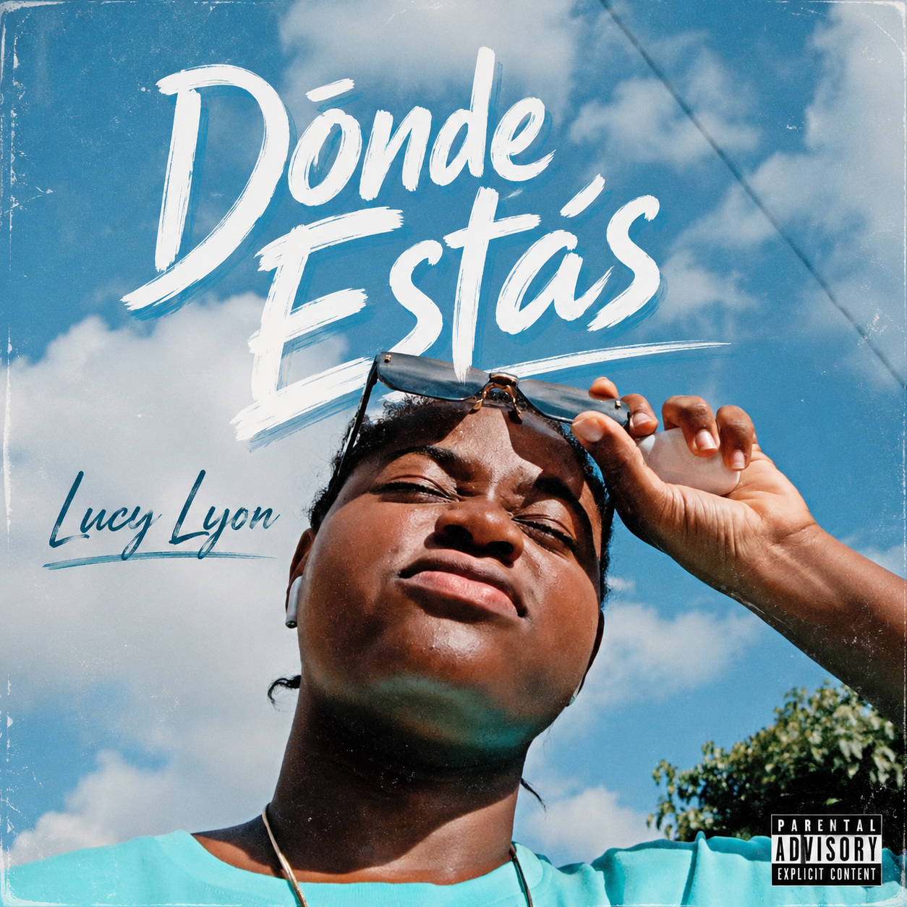
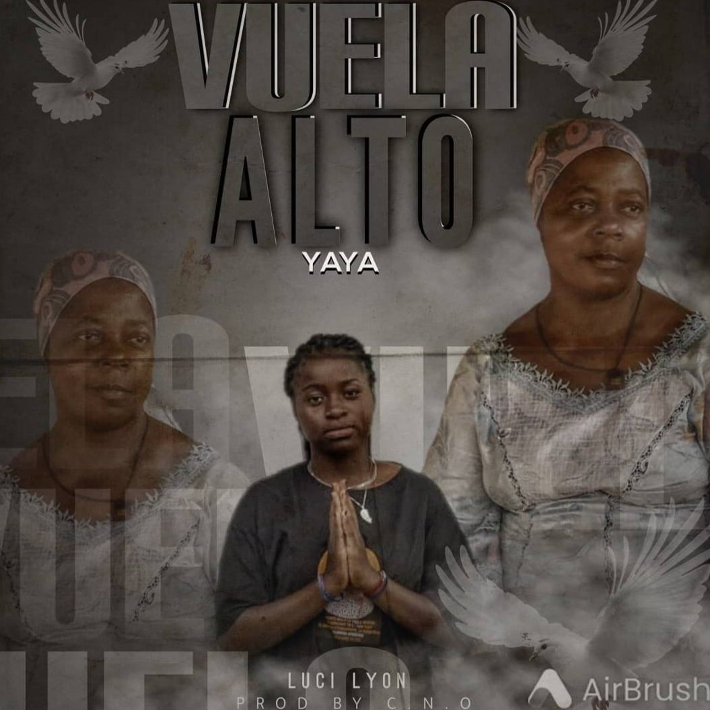
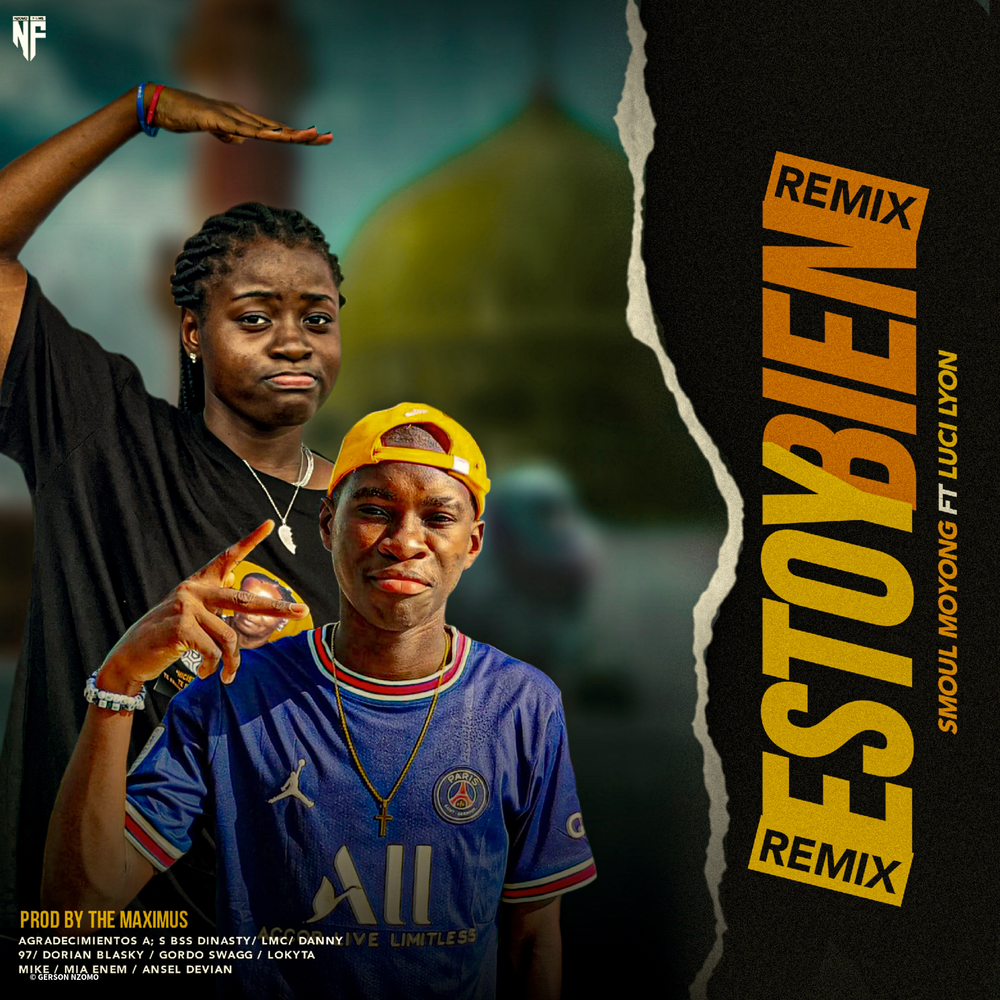
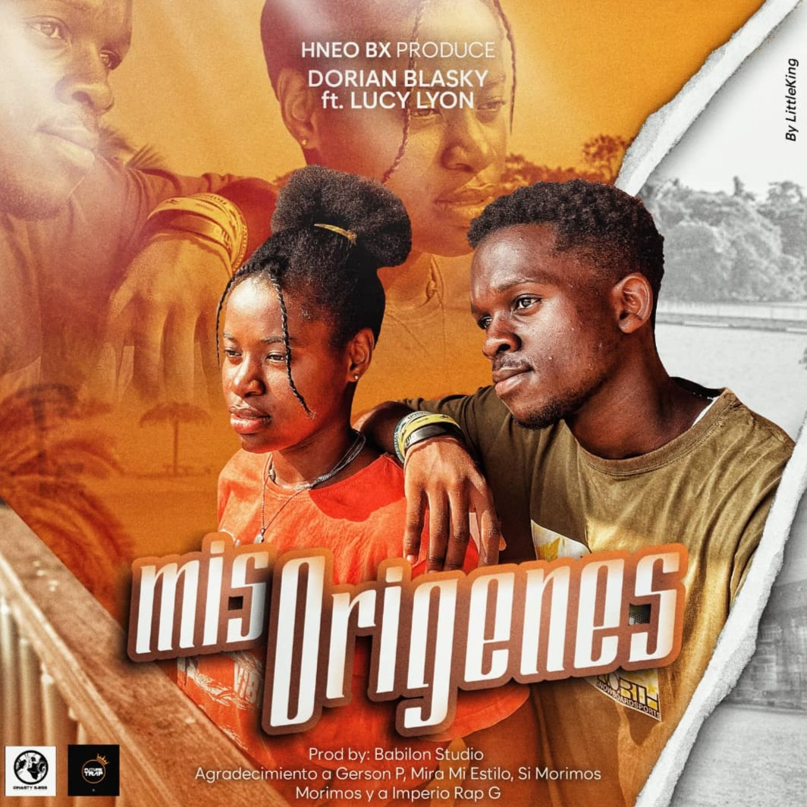
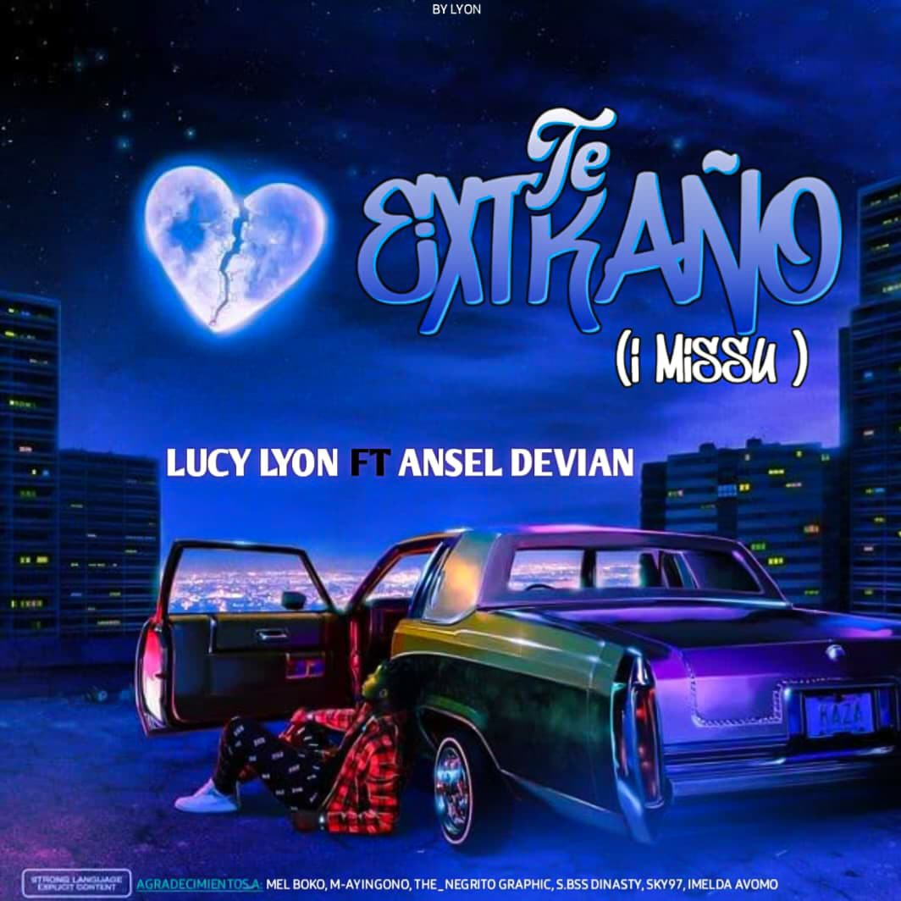
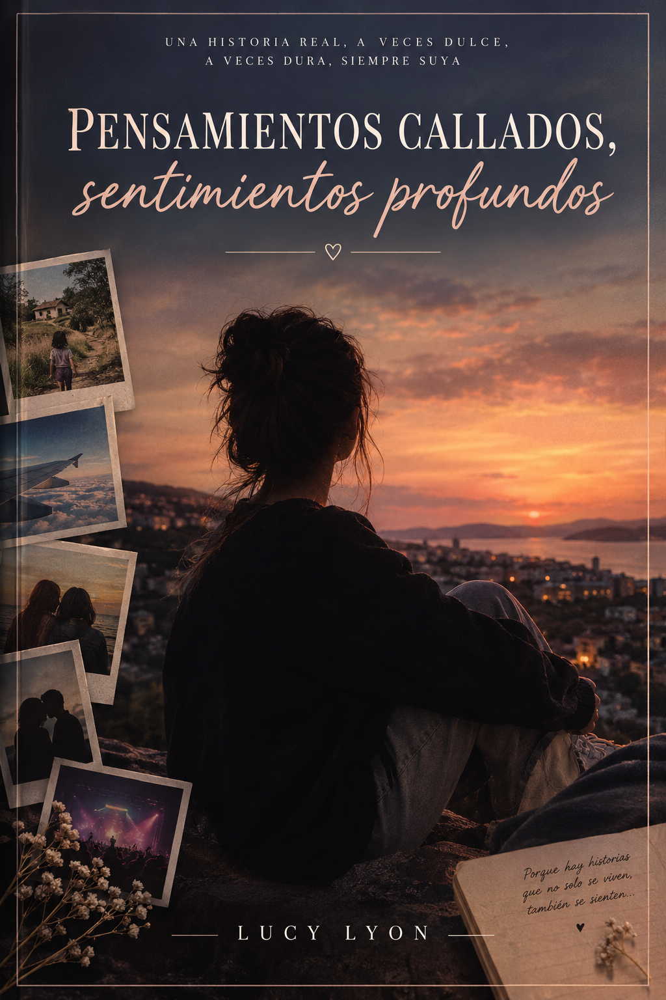

Soy Lucy Lyon, creadora y diseñadora de logos.
Diseños gráficos creados para distintos proyectos, personas y marcas.
Canciones, covers y proyectos musicales de Lucy Lyon, creados entre distintas emociones, historias y sonidos.
Una selección de canciones y proyectos musicales de Lucy Lyon.

Lucy Lyon
Una canción de Lucy Lyon disponible en YouTube.
▶ Ver en YouTube
Lucy Lyon
Una canción de Lucy Lyon disponible en YouTube.
▶ Ver en YouTube
Lucy Lyon ft Smoul MOYONG
Colaboración musical con Smoul MOYONG.
▶ Ver en YouTube
Lucy Lyon ft Dorian BLASKY
Colaboración musical con Dorian BLASKY.
▶ Ver en YouTube
Lucy Lyon ft Ansel DEVIAN
Colaboración musical con Ansel DEVIAN.
▶ Ver en YouTubeSoy Lucy Lyon, creadora multidisciplinar apasionada por el diseño, la música y la creatividad.
A través de BY LYON desarrollo proyectos visuales y artísticos con una identidad propia, desde diseños gráficos y portadas musicales hasta proyectos personales y creativos.
Una selección de mis trabajos y proyectos creativos.

Un proyecto literario de Lucy Lyon.
Leer proyecto¿Tienes un proyecto o quieres trabajar conmigo?